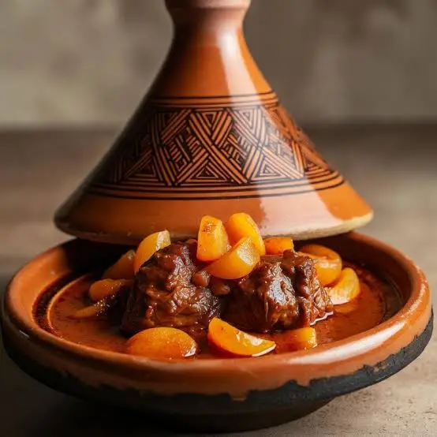
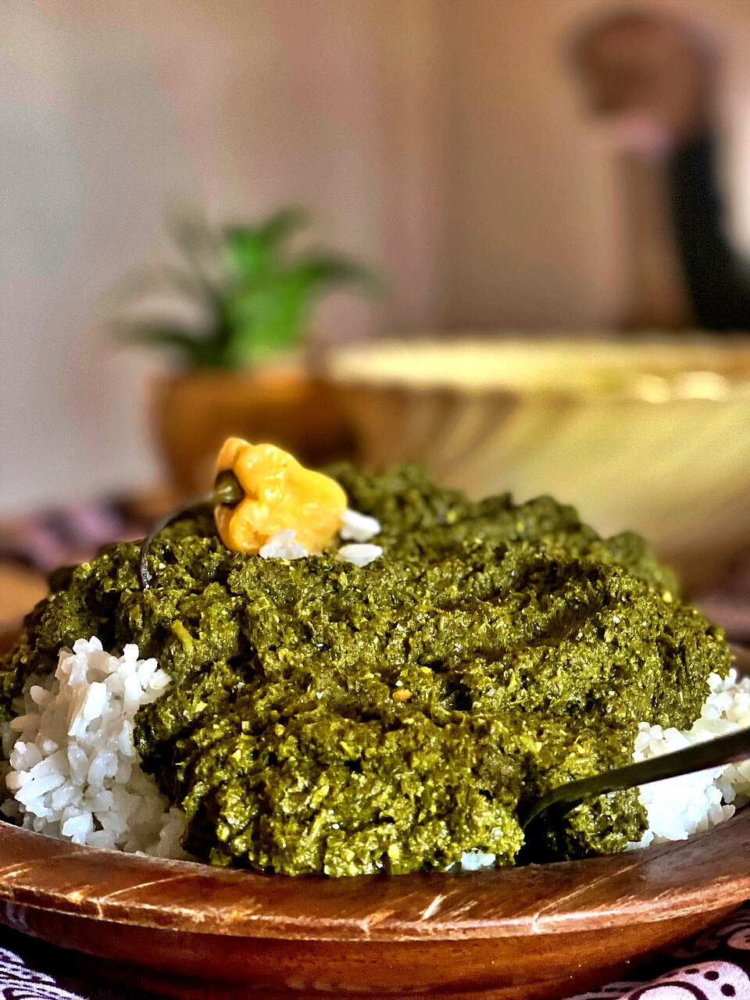

Nigeria & Ghana · West Africa
Jollof Rice
Smoky, tomato-rich rice slow-cooked with peppers and spice.
View Recipe →Explore the rich culinary traditions, authentic recipes, and unforgettable stories behind Africa’s diverse food culture.
Smoky, tomato-rich rice slow-cooked with peppers and spice.
View Recipe →
Spongy teff flatbread with a slow-simmered berbere chicken stew.
View Recipe →
Lamb slow-braised with apricots, preserved lemon, and warm spices.
View Recipe →
Cassava leaves stewed with eggplant and groundnuts in a rich, earthy sauce.
View Recipe →Bold, smoky, peppery flavors built on slow-cooked sauces and one-pot rice.
Explore Region →Fermented breads, aromatic spice blends, and hearty stews shared from one plate.
Explore Region →Fragrant braises, couscous, and the sweet-and-savory harmony of Mediterranean trade.
Explore Region →Stories of the cooks, markets and traditions behind the plate.
Read story →Stories of the cooks, markets and traditions behind the plate.
Read story →
Stories of the cooks, markets and traditions behind the plate.
Read story →A short film on the fire, the pot, and the families who keep African food traditions alive.